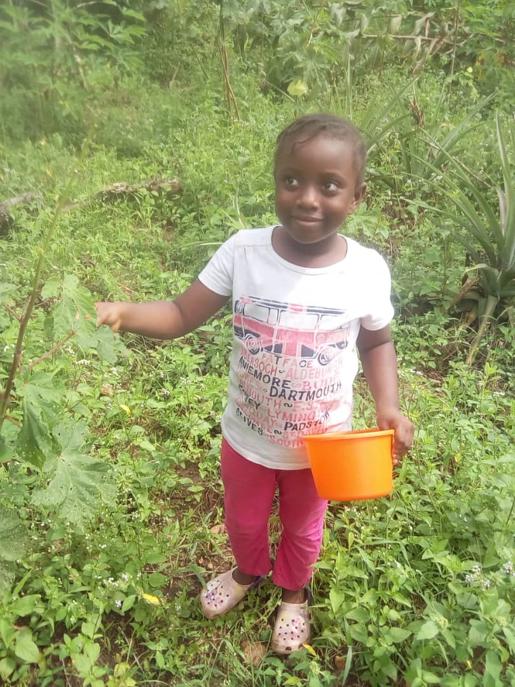

An Early Childhood Education expert by training and a die hard tech enthusiast. Modupe has loved farmimng from an early age and has brought in a wealth of experience to bear. She is the lead partner on this project.
Olawale Folarin
Principal Partner. Wale believes in agriculture as a tool for providing the necessary diet an individual or animal needs for survival. He strongly supports subsistence farming everywhere you go.

Olulana Folarin
Office administration and client management is a big plus for this giant. She brings smiles to your faces and answers all your questions with precision.
Anuoluwapo Folarin
With a strong background in web design, Anuoluwapo brings with her an array of skills necessary for support in the area of logistics.